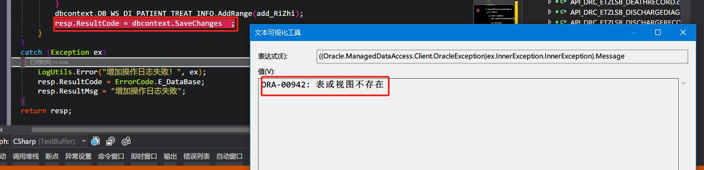
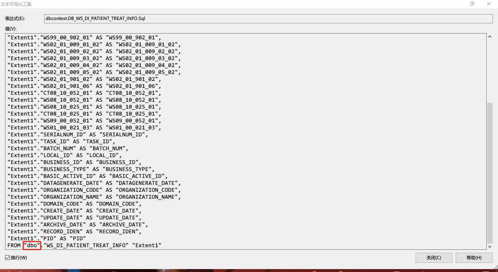
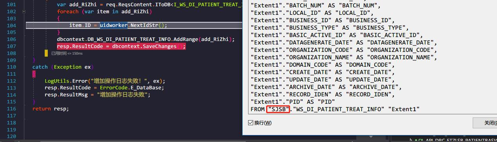
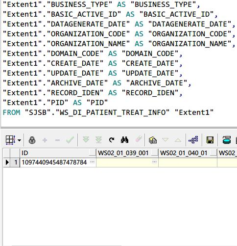

EF Core修改默认schema name
EF Core修改默认schema name
在处理一个需求时，需要将数据插入到我们的一个新的数据库的表中，遇到了一个问题，DbContext在执行插入动作时，提示相关表不存在。如图：

查看EF生成的SQL，可以看到默认使用了dbo这个用户

在Stack Overflow上查到了相关原因为：
For those using Entity Framework 6, just use the
HasDefaultSchemamethod:public class Contexto : DbContext { public DbSet<User> Users { get; set; } protected override void OnModelCreating(DbModelBuilder modelBuilder) { modelBuilder.HasDefaultSchema("MyDefaultDbSchema"); } }
在重写OnModelCreating（）方法时，修要修改DefaultSchema。
我们在代码里修改后，看到dbo用户已经修改为SJSB用户：

数据也成功插入相关表中：
